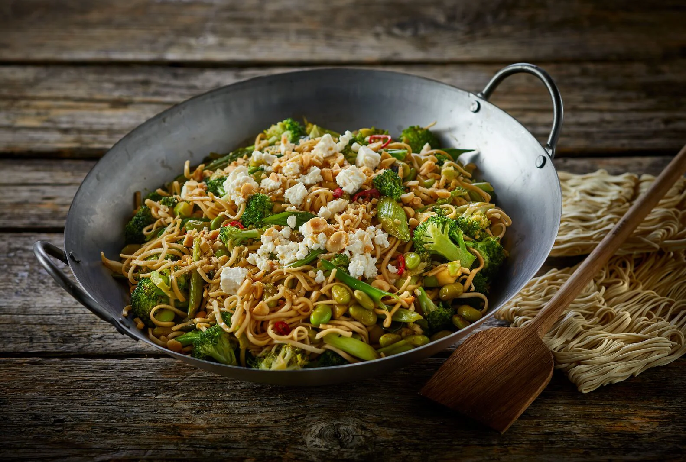
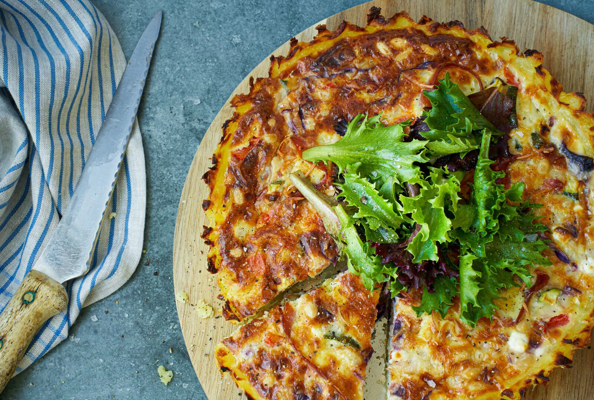
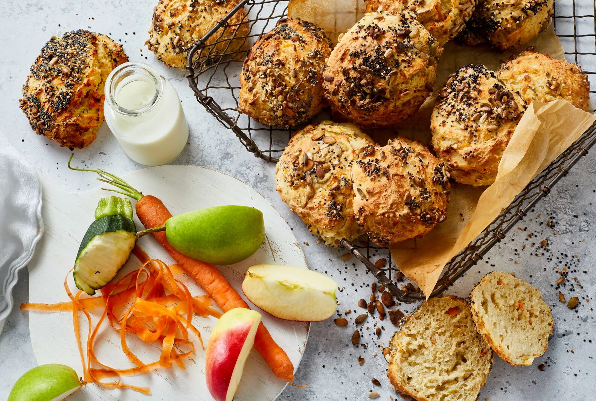
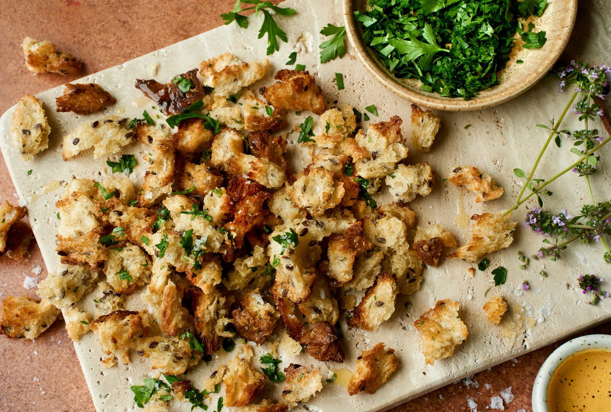

Mad og madspild
Få tips til at mindske dit madspild, samt opskrifter på retter
4 tips til mindre madspild
Køb kun det, du har brug for
Lav en indkøbsliste, inden du handler, og undgå at købe mere mad, end du kan nå at spise.
Gem dine rester
Gem rester fra aftensmaden, og brug dem dagen efter. De kan eksempelvis bruges i madpakken, en ny ret eller som en lille snack.
Lav en madplan
Planlæg dine måltider for nogle dage eller en hel uge. Tjek først, hvad du allerede har i køleskabet, fryseren og køkkenskabene.
Tøm køleskabet
Giv dine rester og madvarer, der snart skal bruges, nyt liv. Prøv at sammensætte en ret ud fra de ingredienser, du allerede har.
Opskrifter
Wok med nudler

Tøm køleskabet, og lav wok med det, du allerede har derhjemme.
Se opskriftKartoffeltærte

Få brugt de kartofler, du har liggende i køleskabet, samt andre ingredienser, der kunne være lækre at bruge.
Se opskriftMadspildsbolle

Brug de grøntsager eller frugter, der ikke længere er helt friske, i dine boller.
Se opskriftCroutoner

Det brød, der er blevet lidt tørt, kan blive til lækre croutoner til en salat.
Se opskrift